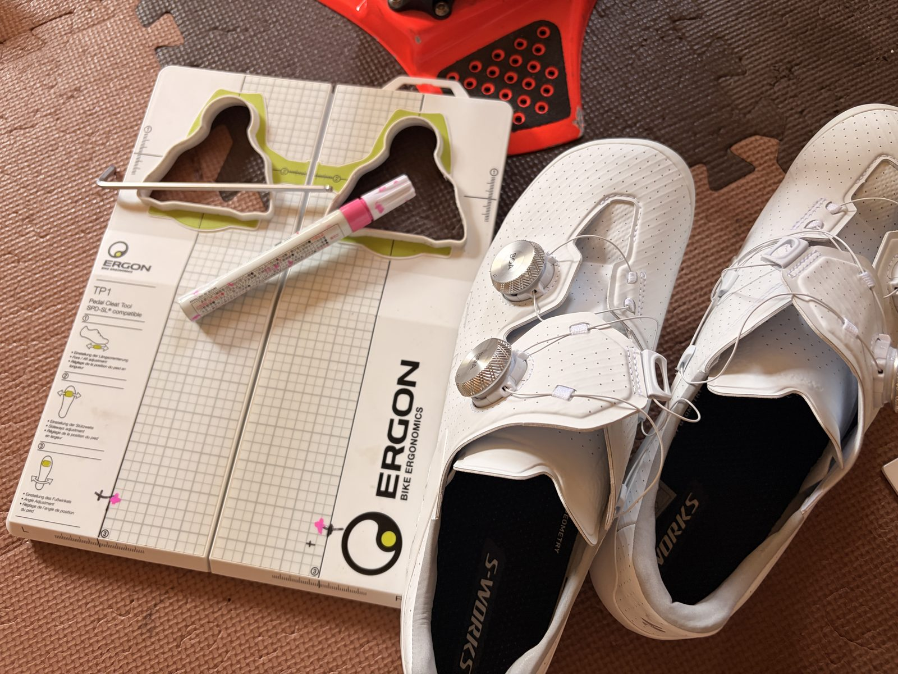

初代Aresの内装が限界に。S-Works Ares 2へ履き替えてみた
長く使ってきた初代S-Works Aresの内装がかなり傷んできた。特にかかと内側の擦れが目立つ。ただしBOAもソールも問題なく、走って足が痛くなるわけでもない。まだ使えるからこそ、買い替えるか少し迷った。
それでも次の一足を考える時期だと思い、同じサイズのS-Works Ares 2を購入した。今回は買い替えレビューというより、初代から新型へ移行を始めた初日の記録になる。

初代Aresはまだ使える。でも内装は限界に近い
初代S-Works Aresは私の足にかなり合っていた。長時間でも痛くなりにくく、ホールド感にも大きな不満はない。新しい物へ替えたいというより、同じ物をもう一足確保してもいいと思っていたくらいだ。
実際に初代の新品を安く買える話もあった。同じサイズで、すでに足へ合うことも分かっている。失敗しにくい選択だったと思う。それでも今回は、せっかくなら新しい設計を試してみようとAres 2を選んだ。
同じサイズのAres 2を選んだ
Ares 2も初代と同じサイズにした。サイズまで変えると、感じた違いがシューズそのものによるのか、単純な大きさの差なのか分かりにくくなる。比較するなら条件はできるだけ揃えたい。
カラーは白。これまで白いロードシューズを使ったことがなかったので、今回はあえて選んだ。きっと汚れる。それもかなり早い気がする。それでも新品らしい雰囲気があり、見た目の満足感は高い。履くだけで少し速そうに見えるのは、たぶん気のせいである。
ERGON TP1でクリート位置を移した
クリートはERGON TP1を使い、初代Aresの位置をできるだけ再現した。位置が変わると、踏みやすさがシューズによるものかクリートによるものか分からなくなるためだ。
とはいえ一度外して付け直しているので、完全に同じ位置とは言い切れない。偶然以前より良い場所へ収まった可能性もある。新しいシューズと同時にクリートも動いている以上、初回の感触だけで結論を出さない方がよさそうだ。

最初のローラーでは踏みやすく感じた
Ares 2で最初に乗ったのはローラーだった。足が自然にペダルへ乗り、踏み込んだ力が逃げにくい。ペダリング全体も少しまとまりやすくなったように感じた。
ただし「Ares 2だから良くなった」とはまだ判断しない。その日の身体の調子、クリート位置、新品を履いた高揚感まで変化点が多い。踏みやすく感じたのは事実だが、理由はまだ分からない。
左足外側に軽い圧迫感が出た
良い感触だけではなく、左足の外側には少し圧迫感と軽い痛みが出た。初代Aresでは気にならなかった場所なので、ここはしばらく確認したい。
新品のアッパーや内装が馴染んでいないだけかもしれないし、BOAの締め方もまだ決まっていない。何度か履いて消えるなら問題なし。続くようならBOA、インソール、クリート位置、ソックスの厚みを順番に見直す。
しばらくローラーで慣らす
Ares 2は、すぐ外ライドの主力にはしない。ローラーなら痛みが出ても止めやすく、BOAの締め付けもその場で変えられる。左足外側の圧迫感、かかとの浮き、足指の余裕、クリート位置を確認しながら慣らしていく。
外でも問題なさそうならAres 2を主力へ回し、初代はローラーや雨の日、汚れやすい練習で使う予定だ。初代は内装こそ傷んでいるが、まだ働ける。いきなり世代交代ではなく、当面は二足体制になりそうだ。
今回やってみて思ったこと
高いシューズを買えば、良くなっていてほしいと思う。最初から踏みやすく感じたなら、なおさら新型のおかげにしたくなる。ただ今回はクリート位置も身体の状態も気分も変わっている。
今の結論は「踏みやすく感じた」「左足外側は少し痛い」「まだ判断できない」の三つで十分だと思う。白いシューズはたぶんすぐ汚れる。それでも新しい装備は気分が上がるので、まずは焦らず足とシューズを馴染ませていく。
自分用メモ
- 旧シューズ初代S-Works Ares / 内装と踵周辺の擦れが目立つ
- 新シューズS-Works Ares 2 / 初代と同じサイズ / 白
- クリートERGON TP1で初代の位置をできるだけ再現
- 初回の感触踏みやすく、力が逃げにくい印象
- 違和感左足外側に軽い圧迫感と痛み
- 運用Ares 2はローラーで慣らし、初代も当面併用